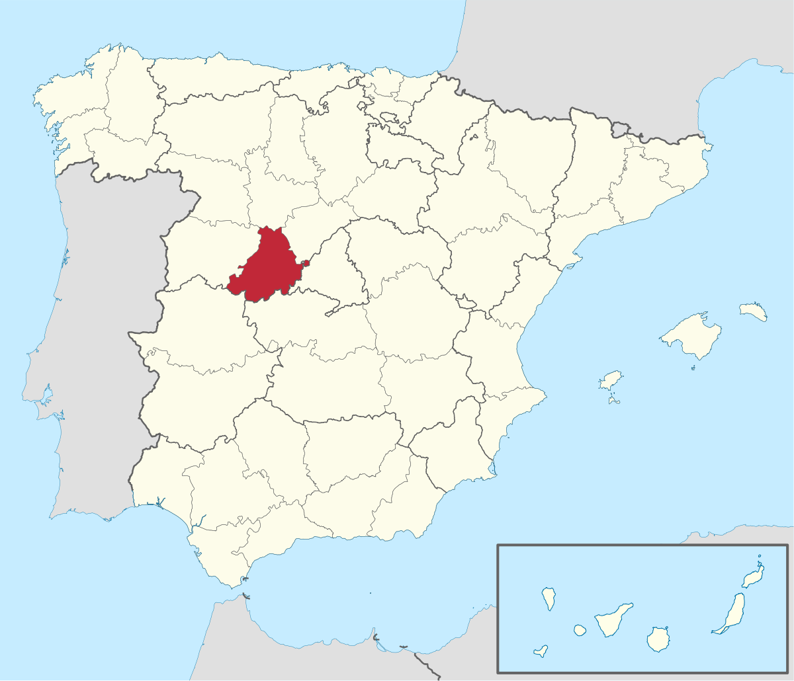
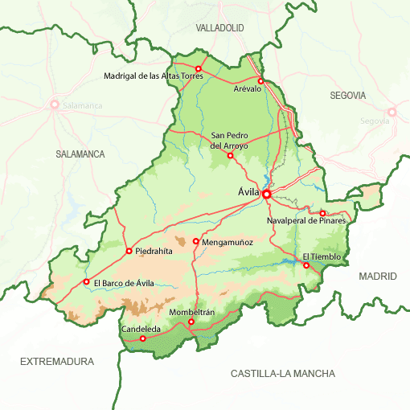
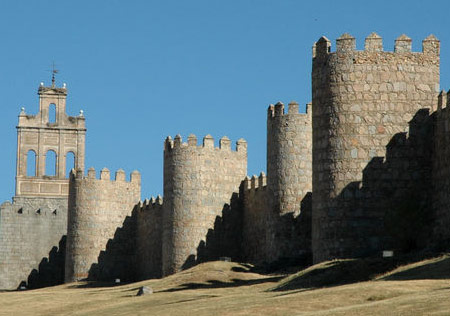
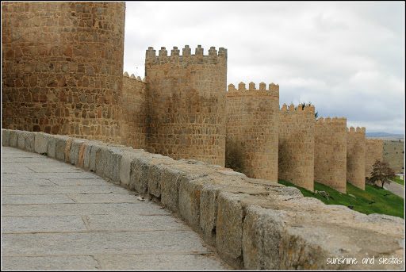
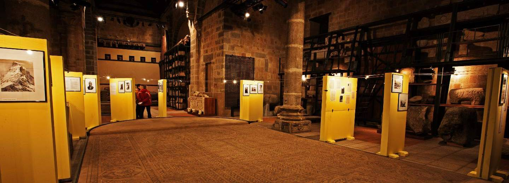
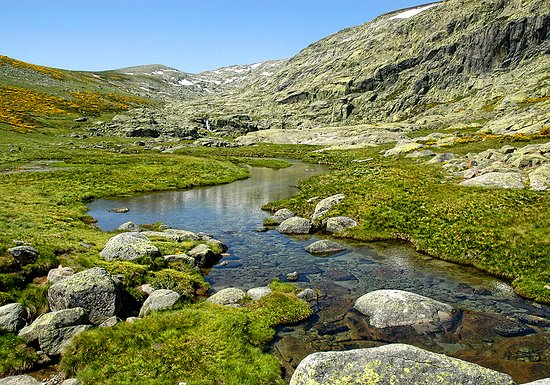
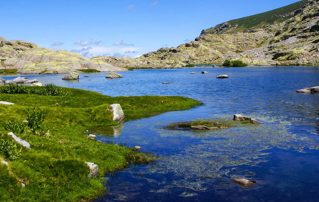
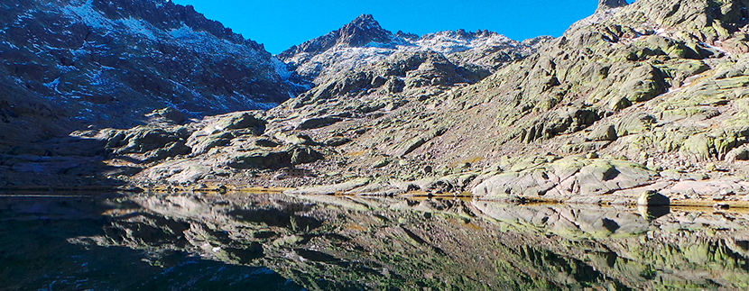
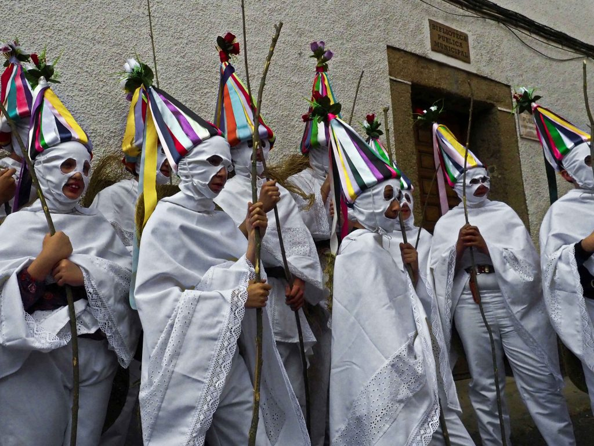
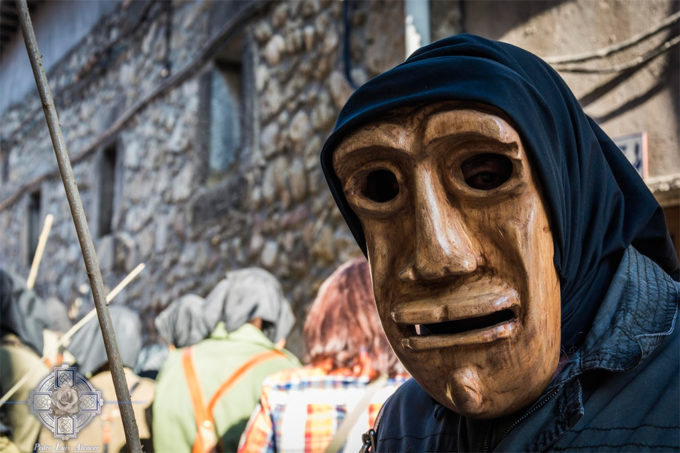

Informacion
Localización
Localidades principales
Geografía de la provincia
Historia
Cultura
Naturaleza
Tradiciones
Otros aspectos de interés
Ávila
_______________________________________________________________________________________________________________________________________________________________
Localización
Ávila es una provincia del centro de España perteneciente a la comunidad autónoma de Castilla y León. Su capital es la ciudad de Ávila y está formada por 248 municipios. Su relieve está marcado por la presencia al sur del Sistema Central, que la divide en dos zonas: la mayor parte del territorio abulense se ubica en la submeseta norte, si bien incluye también una franja al sur de la sierra de Gredos. Ávila, que limita con Valladolid, Toledo, Cáceres, Segovia, Madrid y Salamanca, es una de las provincias menos pobladas del país, con 158 698 habitantes
_______________________________________________________________________________________________________________________________________________________________
Localidades principales
Ávila es una de las nueve provincias de España que conforman la comunidad autónoma de Castilla y León. Cuenta con 248 municipios constituidos. El municipio de mayor extensión es también el municipio más poblado, la capital provincial. El municipio menos extenso es el de Poyales del Hoyo, con una superficie de tan solo 3,38 km². La última inscripción de un municipio al registro de entidades locales se produjo el 14 de diciembre de 1990 al constituirse el día anterior como municipio la entidad de Villanueva de Ávila, segregándose de Navatalgordo. La unidad administrativa básica en la que se divide la provincia son los municipios. Existen 248 en la actualidad. El municipio con más habitantes es la capital provincial. El resto de municipios no alcanzan la cifra de 10 000 ciudadanos empadronados. Es destacable un elevado número de ellos con poblaciones por debajo de los 500 habitantes. La extensión promedio del municipio en la provincia es de 32,46 km². Aparte de la capital provincial, entre las localidades destacan en cuanto a población Arévalo y Madrigal de las Altas Torres en la parte norte de la provincia (en la comarca tradicionalmente conocida como La Moraña). En el suroeste de la provincia sobresalen El Barco de Ávila, Piedrahíta y La Horcajada. En el más poblado sur de la provincia, en la vertiente meridional de la sierra de Gredos los municipios con más habitantes de la comarca del valle del Tiétar son los de Arenas de San Pedro, Candeleda, La Adrada, Piedralaves, Casavieja, Mombeltrán y El Arenal. En la parte este de la provincia, en zonas como el valle del Alberche y la Tierra de Pinares caracterizadas por una mayor cercanía a la capital del Estado, Madrid, destacan municipios como Las Navas del Marqués, El Tiemblo, Cebreros, Navaluenga, El Hoyo de Pinares, El Barraco o Burgohondo. De acuerdo al padrón municipal del INE los veinte municipios más poblados de la provincia en 2017 fueron
_______________________________________________________________________________________________________________________________________________________________
Geografía de la provincia
Ávila está localizada geográficamente en la Meseta Norte de la península ibérica. Se halla situada a 1131 m de altitud, en un promontorio rocoso en la margen
derecha del río Adaja —afluente del Duero— y se trata de la capital de provincia más alta de España Su término municipal abarca 231,9 km², el 3 % de la
superficie de la provincia.
El término municipal de Ávila —con un perímetro muy irregular— limita al norte con los de Cardeñosa, Mingorría, San Esteban de los Patos, Brieva,
Tolbaños, Berrocalejo de Aragona, Mediana de Voltoya y Ojos-Albos, al este con el de Santa María del Cubillo, al sudeste con los de Navalperal de
Pinares y Herradón de Pinares, al sur con el de Tornadizos de Ávila, al suroeste con el de Gemuño, al oeste con los de El Fresno, La Colilla, Martiherrero
y Marlín y al noroeste con los de Bularros y Monsalupe El territorio del término municipal está representado en las hojas 506, 531 y 532 del Mapa Topográfico
Nacional.
Ver desde Youtube - Video realizado por TallerPPS
_______________________________________________________________________________________________________________________________________________________________
Historia
Ávila, con acento en la Á es la forma correcta de escribir su nombre en español. Puede haber sido la antigua ciudad conocida como Abula, mencionado por
Ptolomeo en su Geographia (II 6, 60) que se encuentra en la región de Bastetania Ibérica.
Abula se menciona como una de las primeras ciudades en Hispania que fue cristianizada, concretamente por San Segundo. Sin embargo, Ávila puede haber sido
la antigua Obila, mientras que Abula puede haber sido el pueblo de Abla.


Prehistoria y romanos
Monumento conocido como "Los Cuatro Postes" Restos romanos junto a la Puerta de San Vicente.El nombre de la ciudad viene de los distintos pueblos y tribus que han vivido a lo largo de milenios en la provincia. Los primeros fueron los vetones, que la llamaron Óbila (monte alto), siendo uno de los castros más importantes de esta tribu, junto con Sanchorreja, Berrueco, Mesa de Miranda, Las Cogotas, El Raso y Ulaca. Los vetones dejaron vestigios por toda la geografía de la provincia de Ávila, especialmente en forma de verracos. Más tarde la poblaron los romanos, dándole el nombre de Abila o Abela. Los romanos dejaron también su marca en la ciudad, que consistía por entonces en el actual casco viejo, la parte rodeada por las murallas. Calzadas, mosaicos o la plaza del Mercado Grande, o El Grande, son parte de los vestigios romanos que quedan.El interior de la ciudad aún mantiene el trazado típico de las ciudades romanas tipo hiberna (castros estables), de contorno rectangular, con dos calles principales (cardo y decumano) que se cortan ortogonalmente en el centro donde estaba el foro. Actualmente este trazado aparece sólo parcialmente modificado, reconociéndose fácilmente antiguas entradas romanas en las puertas de San Vicente y Gonzalo Dávila, donde los cubos defensivos originales fueron conglobados en la muralla medieval. También se mantienen las manzanas cuadrilongas recuerdo de las insulae romanas. El Cardo máximo corresponde a la actual Calle de Vallespín; mientras que el Decumano máximo lo constituirían la Calle de los Caballeros y la Calle de Bracamonte. Todas ellas confluyen en el «Mercado Chico» que fue el antiguo foro. Por su parte, la necrópolis romana estaba al este, más allá de la Calle de San Segundo, de modo que en toda esa parte de la muralla se pueden observar piezas funerarias reaprovechadas como materiales de construcción: estelas, aras, cipos, «verraquitos» y cápsulas cinerarias de granito, incrustados en los lienzos del muro oriental. Aparte de los restos arquitectónicos, hay numerosos restos cerámicos, monnedas y otros objetos arqueológicos representativos de la vida cotidiana en la Antigüedad.
Visigodos
Los primeros asentamientos visigodos en la península se consideraban geográficamente muy cerrados. Según Palol y sus estudios, los asentamientos visigodos en España comprenden las ciudades de Burgos, Soria, Guadalajara, Toledo, Ávila, Cáceres, Madrid y Palencia, lo que induce a pensar que la elección de estos asentamientos es estratégica. Aunque su ubicación concreta no está determinado en la ciudad de Ávila se sabe que fue una de las plazas fuertes de la época visigoda. Durante los siglos VI y VII no hubo conflictos en la ciudad.Los visigodos utilizaban la tierra para cultivos de cereal y ganadería, según las pizarras encontradas sobre todo en el municipio de Diego Álvaro. La importancia de Ávila en este periodo se debe a un carácter religioso según la documentación que detalla la intervención de los prelados de Abela en los concilios toledanos.
Arqueologia
Corrobora el devenir visigodo en Ávila el templo de Santa María de la Antigua. Las crónicas registran que este monasterio fue fundado antes del año 687, siendo monasterio mixto (para ambos sexos) hasta la llegada de los árabes. Su importancia era tal que se cita como el lugar donde murió Santa Leocadia, hija del Rey Wamba. En esta iglesia estaría enterrado también el duque Severiano, un noble visigodo.Edad Media
Invasión musulmana No se puede precisar por falta de datos las circunstancias y vicisitudes durante la etapa de dominación musulmana ni tampoco concretar la relación social, económica, cultural, política y religiosa que pudieran tener esta creencia en Ávila. Lo único que parece seguro es que durante los primeros años de la invasión musulmana la ciudad se convirtió en un punto estratégico, siempre deseada por árabes y cristianos como enclave defensivo, y los enfrentamientos por su posesión fueron permanentes. Hubo incursiones de los reyes cristianos en la ciudad después de la ocupación musulmana pero no llegaron a asentarse. Alfonso I y su hijo Fruela llevaron a cabo varias expediciones llegando a entrar en la ciudad (740-742) sin ánimo de permanecer, más bien con intención de destruir las defensas, recaudar botín y a la vez, aprovechando que los pobladores cristianos de la ciudad seguían al rey en su repliegue, obtenían pobladores para las tierras ocupadas y guerreros para la defensa de los reinos cristianos.Tras estas incursiones, se suceden en Ávila tres siglos de los que se conocen pocos aconteceres. Ávila, como otras poblaciones de la meseta, debido a que queda en tierra de nadie, sujeta a las sucesivas expediciones de unos y otros, con la consiguiente destrucción de campos y poblaciones, quedó prácticamente despoblada. Desde el siglo VIII estas zonas o ciudades pueden considerarse dentro del llamado "desierto estratégico" en el que hubo un fuerte despoblamiento, convirtiéndose a su vez en tierra de nadie y siendo escenario de las correrías de ambas fuerzas.
Reconquista
Flanco noroeste de las Murallas de Ávila. En el siglo XI Don Raimundo de Borgoña, yerno de Alfonso VI de Castilla fue el encargado de la repoblación del centro de la península, y con el fin de proteger Toledo surgen las ciudades amuralladas de Salamanca, Ávila y Segovia. Más tarde la repoblación de la península se va llevando más al sur dejando a Ávila en un segundo plano casi sin relevancia en la época, aunque envía procuradores a las Cortes castellanas.En la baja Edad Media (siglo XV y XVI) la ciudad vuelve a renacer gracias a las idas y venidas de la corte. La ciudad y la provincia prosperaron enormemente y fueron el lugar de nacimiento de numerosos personajes religiosos, escritores y consejeros espirituales como Santa Teresa de Cepeda y Ahumada en la capital y San Juan de la Cruz en la provincia (Fontiveros).
Guerras Civiles castellanas
Durante la guerra civil castellana fue sede de los partidarios del infante Alonso. Su concejo fue uno de los principales organizadores de la Guerra de las Comunidades y en ella se formó la primera junta de los comuneros.A partir del siglo XVII la ciudad empieza una larga decadencia y una despoblación que la dejó con apenas 4.000 habitantes, empezando una lenta recuperación en el siglo XIX, con la construcción del ferrocarril.
El sigo XX
El proceso de desarrollo e intensa urbanización que se inicia en el siglo XX han conducido a la ciudad a un segundo plano de la realidad española. Las primeras décadas del siglo han mostrado asimismo un cierta tendencia de la ciudad a preservar sus tradiciones frente a los cambios sociales que se habrían de producir necesariamente en todo el país.En 1936 tras el estallido la Guerra Civil, la ciudad enseguida pasa a formar parte de la zona ocupada por las tropas sublevadas, no produciéndose acontecimientos históricos de relevancia.
Durante la dictadura franquista se intensifica el proceso de despoblación de la provincia que ha de afectar necesariamente a la ciudad.
Tras la Guerra Civil la participación de Ávila en la sociedad española se restringe a pocas acciones, siendo quizá la de más relevancia, pero no por ella la más conocida, la aportación o el apoyo para el lanzamiento de políticos. Ya en el siglo XIX Mariano José de Larra obtuvo un escaño en las Cortes al presentarse por Ávila. Del mismo modo Adolfo Suárez (presidente español durante la Transición y primer presidente de la democracia posterior al Franquismo) realizó parte de su carrera política desde Ávila (nació en el pueblo de Cebreros); en la década siguiente José María Aznar (presidente entre 1996 y 2004) salió elegido diputado en las Cortes por Ávila, pese a no ser abulense. Se puede citar a otros ministros que han comenzado su andadura política desde esta ciudad como Agustín Rodríguez Sahagún, Agustín Díaz de Mera, o Ángel Acebes. Sin embargo estas aportaciones no reflejan en absoluto la influencia real de la ciudad o la provincia en la política española, que es muy inferior a la relevancia de estas personas.
Más en Wikipedia...
_______________________________________________________________________________________________________________________________________________________________
Cultura
Museos
El principal museo de la ciudad es el Museo de Ávila, inaugurado en 1911. En el año 1968 adquirió identidad de Museo Provincial. Está gestionado por la Junta de Castilla y León desde 1987. El museo consta de dos localizaciones: la Casa de los Deanes, un palacio renacentista del siglo xvi que funciona como sede principal y la iglesia de Santo Tomé, levantada originalmente en el siglo xii, que se utiliza como almacén visitable. Las colecciones se engloban en tres grandes secciones: una representativa de la cultura rural de la provincia, otra que recoge piezas halladas en territorio abulense desde la Prehistoria hasta el siglo xix y finalmente una dedicada exclusivamente a piezas arqueológicas encontradas en excavaciones urbanas de la ciudad de Ávila.En el interior de la catedral de Ávila, está instalado el museo de la Catedral, que alberga una exposición de arte religioso en el convento de la Encarnación también existe una exposición permanente, que muestra diversos testimonios históricos de Santa Teresa de Jesús así como diversas piezas de arte religioso. También conserva piezas relativa a la vida y obra de San Juan de la Cruz. En la cripta del convento de Santa Teresa se localiza museo de Santa Teresa, que expone la obra y vida de la santa, así como diversas piezas de arte religioso.
Convento de Santa Teresa. En el interior del monasterio de Santo Tomás se mantienen varios museos, como el de Arte Oriental y el de Ciencias Naturales. El museo de Arte Oriental fue inaugurado en el año 1964, está situado en el tercer claustro del monasterio de Santo Tomás y alberga una colección variada de piezas de Japón, Vietnam, Filipinas y China el de Ciencias Naturales alberga una colección de ejemplares zoológicos que formaban parte del antiguo gabinete de historia natural de la orden dominicana del monasterio.
La ciudad cuenta así mismo con el museo Caprotti, ubicado en el palacio de Superunda que alberga la obra del pintor italiano Guido Caprotti, afincado en Ávila desde 1916.

Exposiciones
Existen igualmente diversas salas de exposiciones, como la sala del Agua, la sala del Torreón de los Guzmanes, la sala de la Diputación y la sala del Episcopio durante el año 2004 la catedral acogió la exposición Testigos de la fundación «Las Edades del Hombre», con lo mejor del arte sacro castellano leonés esta exposición se prolongó a lo largo de 223 días y recibió un total de 859859 visitantes durante el año 2006 se llevó a cabo la exposición «Las dos orillas», conmemoración del V centenario de la muerte de Cristóbal Colón durante el verano se puede acceder a visitas nocturnas a la muralla, que son guiadas y teatralizadas los fines de semana. En estas se cuenta parte de la historia de la construcción de las murallas y de la ciudad.Bibliotecas
La ciudad dispone de cuatro bibliotecas públicas: la biblioteca pública de Ávila —en la plaza de la Catedral—, la biblioteca José Jiménez Lozano —en la avenida de la Inmaculada—, la biblioteca Posada de la Feria —plaza de la Feria— y la biblioteca Olegario González de Cardedal —en la calle Don Jesús Jiménez—.Cines
Los cines comerciales de la ciudad son las salas de cine «Estrella», en el centro «Comercial el Bulevar», con 6 salas. Durante un tiempo existió el cine conocido como «Tomás Luis de Victoria» situado en la calle Lesquinas.312 También hay salas en las que se pueden hacer proyecciones, entre otras la del «Auditorio Municipal de San Francisco» y la del «Episcopio».Fiestas
Las fiestas patronales de Ávila son las de Santa Teresa de Jesús, el 15 de octubre, y San Segundo, el 2 de mayo. Las fiestas de verano de la ciudad tienen lugar durante la segunda quincena de julio también es patrona de Ávila la virgen de Sonsoles.La Semana Santa en Ávila es considerada como de Interés Turístico Regional desde el año 1993 y como de Interés Turístico Nacional desde el año 2005. Desde 2014 hasta la actualidad es considerada como de Interés Turístico Internacional.
_______________________________________________________________________________________________________________________________________________________________
Naturaleza
Declarado parque regional en 1996, la Reserva Natural de la Sierra de Gredos es uno de los mayores atractivos naturales y turísticos de la provincia.
Destaca especialmente por su relieve, además, desde el punto de vista biológico, su hábitat y diversidad convierten a este espacio en uno de los más
interesantes de toda Europa.
Está constituido por materiales pétreos muy antiguos formados durante la orogenia alpina, fracturados después y desnivelados, creando un relieve de tipo germánico.
Conserva numerosas huellas de las épocas del glaciarismo, especialmente bellas son sus lagunas, destacando entre ellas la Laguna Grande y el conjunto de Las
Cinco Lagunas
Vegetación
En la zona norte se mezcla el bosque de pinus sylvestris, en la zona de Navarredonda y Hoyos del Espino, con el rebollar del valle del Tormes. En la cara sur
domina el pinus pinaster, la jara y el brezal, con vegetación de ribera de sauces, chopos, alisos y álamos negros. Vegetación de matorrales de pequeña talla en
la Serrota, paramera y Macizo de Gredos formada por piornos, enebros rastreos y aliagas. Pastizales duros sobre suelos secos y, sobre todo, cervunales que, por
su extensión y poder alimenticio son de gran importancia tanto para el ganado vacuno y caballar como para la población de cabra montés.



Fauna
Dentro de las especies animales se contabilizan unas 230 especies, con un elevado número de endemismos peninsulares. Hay también algunos endemismos propios de
Gredos como la salamandra del Almanzor, el sapo de Gredos, el topillo nival abulense o la cabra montés (pyrenaica victoriae). Además se dejan ver águilas
imperiales, buitres y cigüeñas negras.
Toda la zona está muy bien preparada para la recepción de turistas. Podrás descansar en sus confortables hoteles, hostales y casas rurales (más de 1.500 plazas),
podrás disfrutar de su gastronomía en más de 50 restaurantes, bares y cafeterías. Con un servicio excelente: más del 50% de la población trabaja en sector
turístico…. y a menos de dos horas de distancia de ciudades como Madrid, Salamanca, Talavera y Cáceres.
Gredos es mucho más que alta montaña...
Pionera en turismo rural.Una de las primeras asociaciones de turismo de España (Gredos-Tormes) se creó aquí en 1910, y aquí también se abrió el primer Parador
en España –El Parador de Gredos--. La creación del Parque Regional de la Sierra de Gredos ha sido también un impulso para el turismo.
Cielos espectaculares. Podrás disfrutar de los cielos limpios y libres de contaminación, tanto por el día como por la noche. Si eres aficionado, puedes, además,
acercarte a los establecimientos que tienen telescopios y guías que pueden acompañarte para hacer observación o astrofotografía. Queremos preservar el derecho
a un cielo nocturno no contaminado que te permita disfrutar de la contemplación del firmamento. Lo consideramos como un derecho inalienable de la humanidad,
equiparable al resto de los derechos ambientales, sociales y culturales. Si quieres saber más, visita nuestro proyecto Cielo Oscuro.
Piornos en flor durante los meses de mayo, junio y julio… un espectáculo de color amarillo y de aroma. Se pueden ver piornos en flor en otros sitios de España,
pero solamente en Gredos Norte se pueden contemplar grandes extensiones: más de 5.200 hectáreas de monte en flor. Tenemos cada año el Festival del Piorno en
Flor donde se programan múltiples actividades para que el visitante pueda disfrutar no sólo de la contemplación del paisaje en los puntos de observación
señalados, también conciertos de música, concursos de decoración de exteriores, talleres demostración de usos y costumbres (chozos, escobas….) pero, sobre
todo, es un disfrute de color y olor en plena naturaleza.
Para mas informacion ASENORG
_______________________________________________________________________________________________________________________________________________________________
Tradiciones
Mascarávila
El proyecto Mascarávila ideado por la asociación de Pedro Bernardo "Siempreviva" se celebrará este año 2016 en la localidad de Hoyocasero, Ávila, el día 16 de abril.Con el ánimo de preservar las antiguas tradiciones de Ávila escondidas en el entorno rural, Mascarávila lleva a cabo cada año las distintas mascaradas, ritos paganos, danzas de paloteo y demás muestras del folklore abulense. Fiestas tradicionales en Ávila que si bien en algún momento han estado a punto de perderse en el olvido, merecen ser recuperadas y divulgadas como parte importante de la cultura de Ávila.  
Ver video desde youtube - Video realizado por JOSE MARIA MORENO GARCIA
_______________________________________________________________________________________________________________________________________________________________
Otros aspectos de interés
Instalaciones deportivas
Estadio Municipal Adolfo Suárez.
El complejo deportivo más importante de la ciudad es el Estadio Municipal Adolfo Suárez, con una capacidad de 6000 espectadores y destinado a la práctica
del fútbol. Cuenta con un campo de hierba y otros dos de tierra es el estadio del Real Ávila C.F. desde 1976, año en que se inauguró.
En el noreste del núcleo urbano, junto al parque homónimo, se localiza el pabellón municipal de San Antonio, centro polideportivo. Dispone de canchas de
baloncesto, balonmano, tenis, fútbol sala, voleibol, frontón y escaladaaAl sur de la ciudad está situado el Centro de Usos Múltiples Carlos Sastre, pabellón
polideportivo cercano al estadio Adolfo Suárez. Su inauguración tuvo lugar el día 30 de enero de 2009 con un partido amistoso entre el Óbila Club de Basket de la
LEB Plata y el C. B. León de la LEB Oro cuenta con pistas de baloncesto, fútbol, tenis y voleibol.
Pabellón Municipal de San Antonio.
Al sureste de la ciudad, en la Avenida de la Juventud, se encuentra la Ciudad Deportiva Municipal, zona polideportiva que dispone de instalaciones para la
práctica de tenis, pádel, fútbol sala, balonmano, atletismo, fútbol y baloncesto, así como de varias piscinas en la calle Padre Victoriano, al noreste de
la ciudad, se encuentra la Ciudad Deportiva Zona Norte, zona polideportiva con instalaciones para la práctica de fútbol, fútbol sala, baloncesto, voleibol,
tenis y natación.369
Fuera de la ciudad se encuentran el Club Casino Abulense y Naturávila. El primero se trata de una zona polideportiva —en el término municipal de Martiherrero—
que cuenta con instalaciones para la práctica de baloncesto, frontón, fútbol sala, fútbol, golf, natación, pádel, tenis, ping-pong y vóley playa naturávila
es un complejo polideportivo situado al sureste de la ciudad, en la carretera AV-503 Dispone de instalaciones para la práctica de golf, equitación, tiro olímpico,
tiro con arco, baloncesto, balonmano, voleibol, fútbol sala, fútbol, pádel, tenis y natación.
| Lunes | +9° | 0° | |
| Martes | +8° | 0° | |
| Miércoles | +16° | +2° | |
| Jueves | +13° | +4° | |
| Viernes | +10° | +2° | |
| Sábado | +10° | -2° |
_______________________________________________________________________________________________________________________________________________________________
Mapa Castilla y Leon

Correo: david.alomon@educa.cyl.es